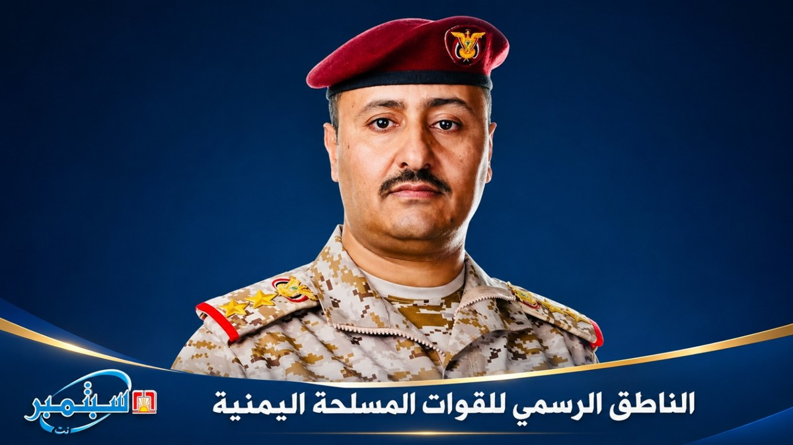
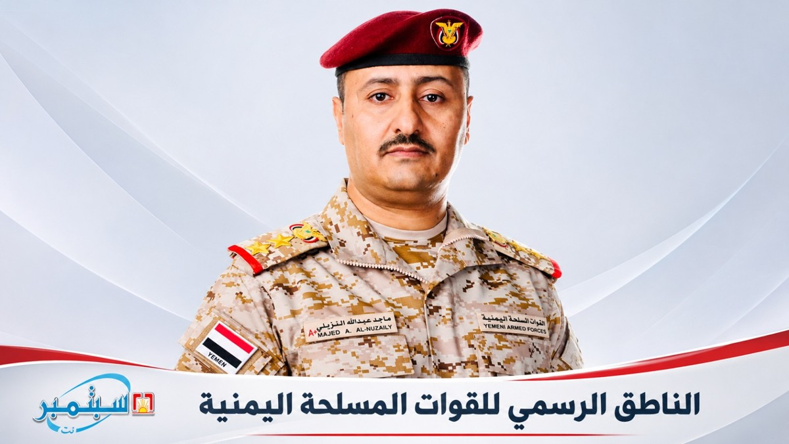
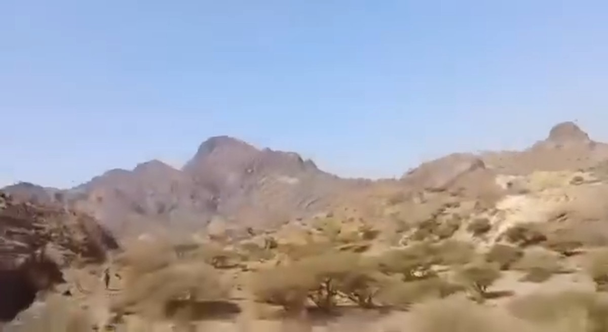
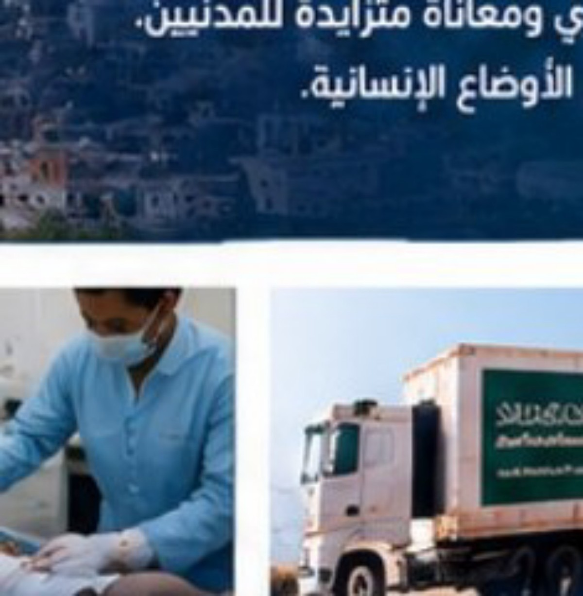
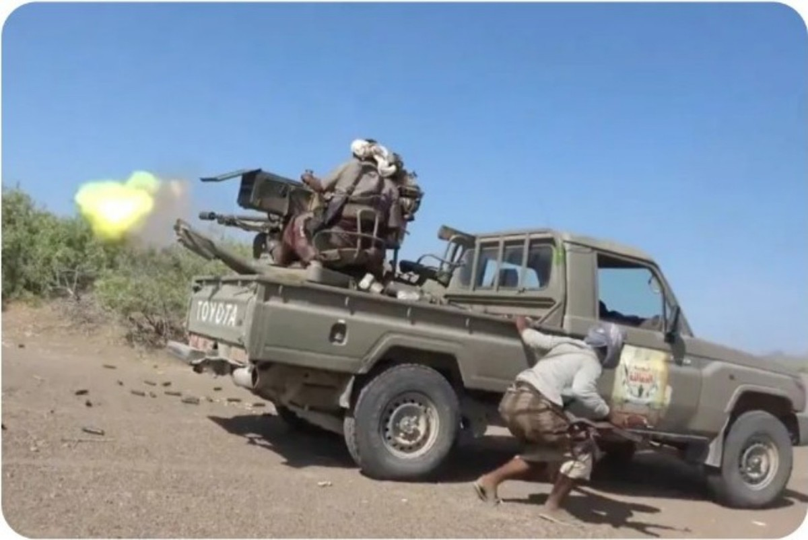
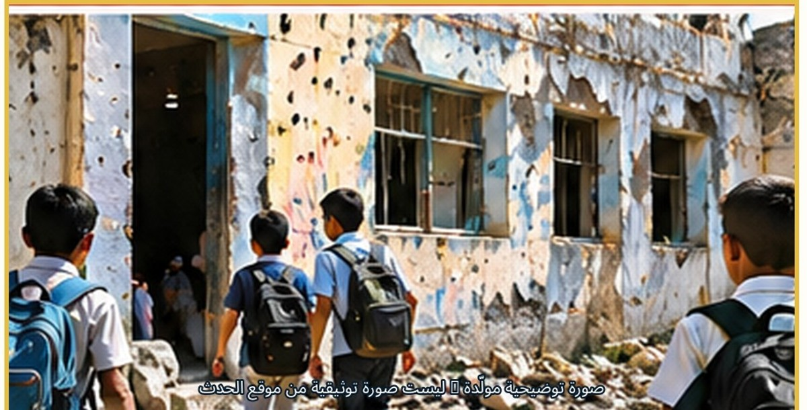
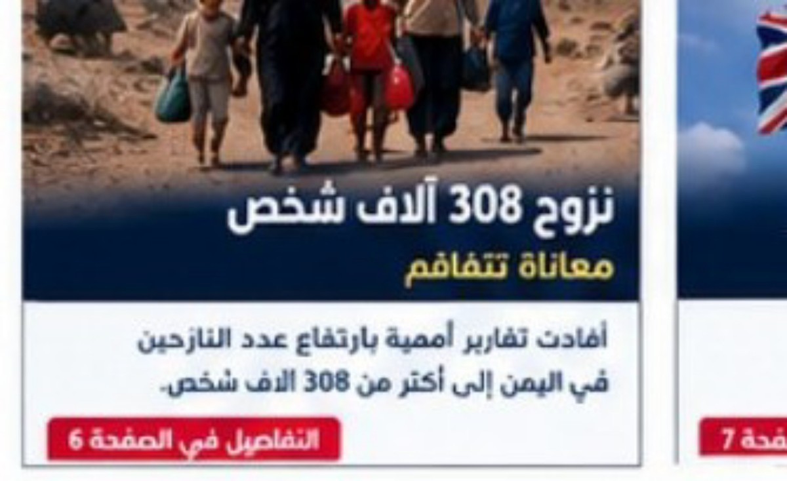

القوات المسلحة تعلن 723 غارة وعملية استهداف في بيان السبت

صورة منشورة مع بيان السبت — سبتمبر نت؛ تاريخ التقاطها غير محدد.
أعلن الناطق الرسمي للقوات المسلحة تنفيذ 723 غارة وعملية استهداف ضمن «فجر اليمن»، موزعة على 37 غارة جوية، و56 عملية بالطيران المسيّر، و89 بالراجمات، و541 بالمدفعية. ونسب البيان إلى العمليات سقوط 321 من عناصر الحوثيين بين قتيل وجريح، وتدمير أو إعطاب 117 آلية ومعدة. وتشمل التغطية جبهات تعز ومأرب والجوف والجبهتين الجنوبية والجنوبية الغربية.
بيان الجمعة: 943 غارة وعملية استهداف على عدة جبهات

صورة منشورة مع بيان الجمعة — سبتمبر نت؛ تاريخ التقاطها غير محدد.
ذكر بيان القوات المسلحة المنشور الجمعة تنفيذ 943 غارة وعملية استهداف، بينها 18 بالطيران الحربي، و21 بالطيران المسيّر، و27 بالراجمات، و877 بالمدفعية. وقال البيان إن العمليات أسفرت عن سقوط 221 من عناصر الحوثيين بين قتيل وجريح وإعطاب أو تدمير 73 آلية ومعدة. وتناول مواجهات تعز والعمليات في مأرب والجوف والجبهات الجنوبية.
القوات المسلحة تعلن استعادة مفرق الصريح في جبهة الصبيحة

صورة منشورة مع خبر مفرق الصريح — سبتمبر نت؛ تاريخ التقاطها غير محدد.
أفاد سبتمبر نت بأن القوات المسلحة، مسنودة برجال القبائل، استعادت الجمعة السيطرة على مفرق الصريح في جبهة الصبيحة بمحافظة لحج. ونقل الموقع عن مصادر عسكرية أن المواجهات أجبرت عناصر الحوثيين على الانسحاب من الموقع. وتبقى تفاصيل السيطرة والحصائل الميدانية منسوبة إلى المصادر العسكرية التي أعلنتها.
طوارئ تعز: منع الجبايات غير القانونية وتنسيق الاستجابة الإنسانية

صورة أرشيفية توضيحية من مواد الشبكة؛ ليست صورة الاجتماع.
ناقشت لجنة الطوارئ في تعز، برئاسة المحافظ نبيل شمسان، الإجراءات الأمنية والخدمات وأوضاع الجرحى. وشدد الاجتماع على منع تحصيل المبالغ غير القانونية في النقاط الأمنية ومداخل المدينة، وأقر لجنة لتنسيق التدخلات الإنسانية وفق الاحتياجات. كما استعرض خطط المديريات والغرفة الإعلامية الموحدة، ووجّه بإعداد تقرير عن احتياجات الجرحى.
مركز تعز الحقوقي يوثق 51 قتيلاً و85 مصاباً خلال 1–12 نوفمبر

صورة أرشيفية من القالب السابق للشبكة، منسوبة إلى AP؛ ليست توثيقاً لوقائع التقرير.
نقلت وكالة سبأ عن مركز تعز الحقوقي توثيق مقتل 51 مدنياً وإصابة 85 آخرين خلال الفترة من 1 إلى 12 نوفمبر، بينهم أطفال ونساء. وتناول التقرير اعتداءات على منازل وأسواق ومرافق مدنية واختطافات. وطالب المركز بحماية المدنيين، ومرور آمن للمرضى والجرحى، وتحقيق مستقل ومحاسبة المسؤولين عن الانتهاكات.
منظمة رصد: ألغام تهدد المدنيين واستخدام 27 مدرسة للتصنيع والتخزين

صورة مدرسية أرشيفية من مواد الشبكة؛ لا تثبت استخدام مبنى بعينه في التقرير.
قالت منظمة رصد للحقوق والحريات، وفق وكالة سبأ، إنها وثقت 41 قتيلاً و82 مصاباً بسبب الألغام في تعز والساحل الغربي. وأشار تقريرها إلى استخدام الحوثيين 27 مدرسة لتصنيع الألغام وتخزينها خلال الأشهر الثلاثة الماضية. ودعت إلى وقف زراعتها وتسليم خرائطها وحماية المنشآت المدنية وفتح تحقيق مستقل.
صورة أرشيفية لمطار عدن من مواد الشبكة؛ لا تحدد موقع سقوط الصاروخين.
نقلت وكالة سبأ عن الناطق الرسمي للقوات المسلحة ماجد النزيلي إعلان استهداف عدن بصاروخين باليستيين من قبل الحوثيين. وربط بيان سابق منشور الجمعة الهجوم بمساء ذلك اليوم. ولم تتضمن الإفادة المعتمدة هنا حصيلة موثقة للضحايا أو أضراراً تفصيلية، لذلك تُحفظ نسبة الهجوم إلى البيان دون إضافة أرقام.
صورة أرشيفية توضيحية لملف المياه من مواد الشبكة؛ ليست من تدشين مشروع تبن.
دشن مركز الملك سلمان للإغاثة مشروع مياه شرب في مديرية تبن بمحافظة لحج، عبر ائتلاف الخير. ويتضمن التوزيع 20 نقطة بخمسة مخيمات، لخدمة 691 أسرة تضم 3976 فرداً. وأعلنت الوكالة، بصورة منفصلة، مساعدات إيوائية تشمل 115 خيمة و115 حقيبة إيوائية، تستهدف نحو 700 شخص.
لحج: تسلّم موقع المقطع الأول لصيانة طريق حبيل جبر – العسكرية

صورة أرشيفية توضيحية للخدمات من مواد الشبكة؛ ليست صورة طريق حبيل جبر.
أعلنت وكالة سبأ تسلّم صندوق صيانة الطرق والجسور موقع المقطع الأول من مشروع صيانة وتأهيل طريق حبيل جبر – العسكرية في لحج، من الجهة المنفذة. ويشمل المقطع طريق حبيل جبر – جسر بناء بطول 12 كيلومتراً. ويتعلق الإعلان بتسلّم موقع المشروع، وليس بإعلان اكتمال الطريق أو افتتاحه.
العمود الثابت | الرؤية الاستراتيجية — المحور التاسع
التعافي الاقتصادي والتنمية
من إدارة المحافظات إلى استعادة الدولة وبنائها: رؤية استراتيجية مقترحة لعمل المحافظين
لا يكتمل حضور الدولة في المحافظات برفع العلم أو انتظام الاجتماعات؛ بل بقدرتها على حماية معيشة الناس، واستعادة النشاط الاقتصادي، وتوسيع فرص العمل. والتعافي المطلوب مسار مؤسسي يربط الإغاثة بالخدمات والإنتاج، ويمنح المواطن سبباً عملياً للثقة بالمؤسسات.
أولاً: تبدأ الأولويات من حياة المواطن
تُبنى خطة التعافي على حصر الاحتياجات في المديريات: المياه والكهرباء والصحة والتعليم والطرق، ثم ترتيب التدخلات وفق عدد المستفيدين وإمكان التنفيذ. ويحتاج كل مشروع إلى مسؤول محدد وكلفة معلنة وموعد يمكن متابعته، مع إتاحة الشكاوى وملاحظات المجتمع.
ثانياً: حماية الإنتاج والأسواق
تسهم إزالة الجبايات غير القانونية وتسهيل حركة السلع وحماية الطرق في تخفيف أعباء النشاط الاقتصادي. ويشمل ذلك دعم الزراعة والصيد والمشروعات الصغيرة، وتيسير إجراءات الترخيص، وتوفير معلومات واضحة للمستثمرين والمغتربين، وفق القانون وتكافؤ الفرص.
ثالثاً: وصل الإغاثة بفرص الكسب
تظل المساعدة العاجلة ضرورة للأسر المتضررة، لكن الاستجابة الأطول أثراً تتيح التدريب والعمل واستعادة الأدوات وسبل العيش. وتُصمم برامج للنازحين والمجتمعات المضيفة معاً، تجنباً للتنافس على خدمات محدودة، وتُراعى مشاركة النساء والشباب وذوي الإعاقة.
رابعاً: موارد عامة تحت الرقابة
تحتاج السلطات المحلية إلى بيانات موثوقة عن الإيرادات والإنفاق والمشروعات، وموازنات قابلة للفهم والمراجعة. ويُربط التمويل بمخرجات واضحة، مع منع تضارب المصالح وإعلان معايير العقود والاختيار والتقييم. فالتنمية لا تستقيم إذا أصبحت فرصها امتيازاً للمقربين.
خامساً: قياس النتائج قبل الاحتفاء بالوعود
يمكن قياس التقدم بانتظام الخدمات، وعدد فرص العمل المستدامة، وزمن إنجاز المعاملات، ونسبة المشروعات المنفذة. وتُنشر النتائج دورياً بما يسمح بتعديل الخطط. وحين يرى المواطن أثراً في دخله وخدمته وأمن طريقه، يصبح التعافي قاعدة لبناء الدولة.
التنمية مسؤولية عامة: موارد تُدار بشفافية، وخدمات تصل بعدالة، وفرص تفتح الطريق أمام الجميع.
ما وراء الخبر | قراءة خاصة بالنشرة
من قرارات الطوارئ إلى خدمة المواطن: كيف تُقاس فاعلية الإدارة في تعز؟
تضع الحرب الإدارة المحلية أمام اختبار يومي: كيف تضمن أن يصل القرار إلى حياة الناس؟ وتكتسب مناقشة طوارئ تعز منع الجبايات غير القانونية، واحتياجات الجرحى، وتنسيق الإغاثة أهمية عملية إذا تحولت إلى مسؤوليات محددة ونتائج يمكن قياسها.
القرار يحتاج إلى مسار تنفيذ
يمكن إعلان تعليمات واضحة للنقاط، وإتاحة وسيلة آمنة لتلقي شكاوى المسافرين، وتحديد الجهة التي تراجعها والمدة اللازمة للرد. ويصبح أثر التوجيه قابلاً للفحص حين يعرف المواطن الرسوم القانونية، ويحصل على إيصال، ويجد إجراءً موثقاً بحق أي مخالفة.
الجرحى والإغاثة: أولوية وفق الحاجة
تحتاج متابعة الرعاية إلى بيانات تحمي الخصوصية وتوضح الاحتياجات العاجلة وتوافر العلاج والإحالة. أما لجنة تنسيق الإغاثة، فتنجح حين تقلل الازدواجية والفجوات، وتعلن معايير الاستحقاق، وتستمع إلى النازحين والمجتمعات المضيفة دون تمييز.
الإعلام جزء من المحاسبة
يساعد التنسيق الإعلامي في نشر المعلومات الصحيحة ومواعيد الخدمات وطرق الشكوى، مع إبقاء مساحة للنقد والتحقق المستقل. وتظل مصداقية الخطاب مرتبطة بإجابته عن أسئلة الناس، وتصحيح الخطأ، وإظهار ما أُنجز وما تعثر وأسباب التعثر.
هذه قراءة في شروط التنفيذ، وليست حكماً بأن القرارات نُفذت بالفعل. معيار النجاح أن يلمس المسافر والمريض والأسرة النازحة خدمة أكثر عدلاً وسهولة وأماناً.